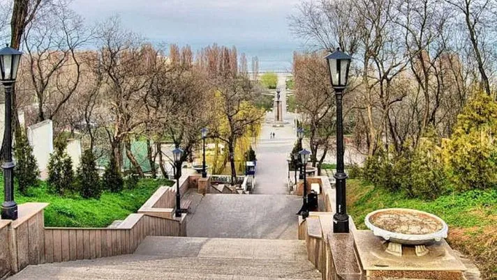
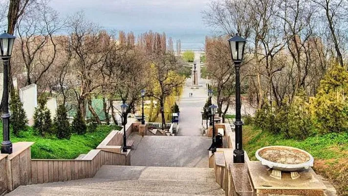

Ольга Голубенко
14 отзывов
- 2.5 час
- Пешая
- Дни проведения: В любое время
- Место встречи: Петровская, 102
- Размер группы: До 32 человек
- Цена: 3800₽ за всю группу
 

14 отзывов
Отправляйтесь на экспресс-прогулку по историческому центру Таганрога! За 2,5 часа вы увидите все самое яркое, чем славится город. Памятники, музеи, исторические здания, купеческие лавки, красивые панорамы, интересные истории, удивительные факты и отличные фотографии – вот, что ждет вас в рамках нашей экскурсии.
• о том, как и почему появился Таганрог на карте России;
• о жизни А.П. Чехова и его семьи в Таганроге;
• о пребывании и неожиданной смерти в Таганроге императора Александра I;
• о богатстве и величии южного купеческого города и многое другое.
Наталья
04.01.2023
Были в Ростове-на-Дону впервые. Очень понравился исторический центр города. А благодаря экскурсоводу Наталье узнали много интересного о Ростове-на-Дону, его жителях и зданиях. Экскурсия пролетела за один миг. Не хотелось отпускать Наталью. Огромное спасибо за профессионализм и эрудицию.
Инна
06.02.2022
Очень интересный рассказ экскурсовода Натальи Николаевны. Хорошая организация.
Елена С.
13.08.2022
Посещали Ростов в первый раз. Обзорная экскурсия оказалась скомканной,. Экскурсия была пешеходно- автобусная. Первый раз не впечатлила подача информации.